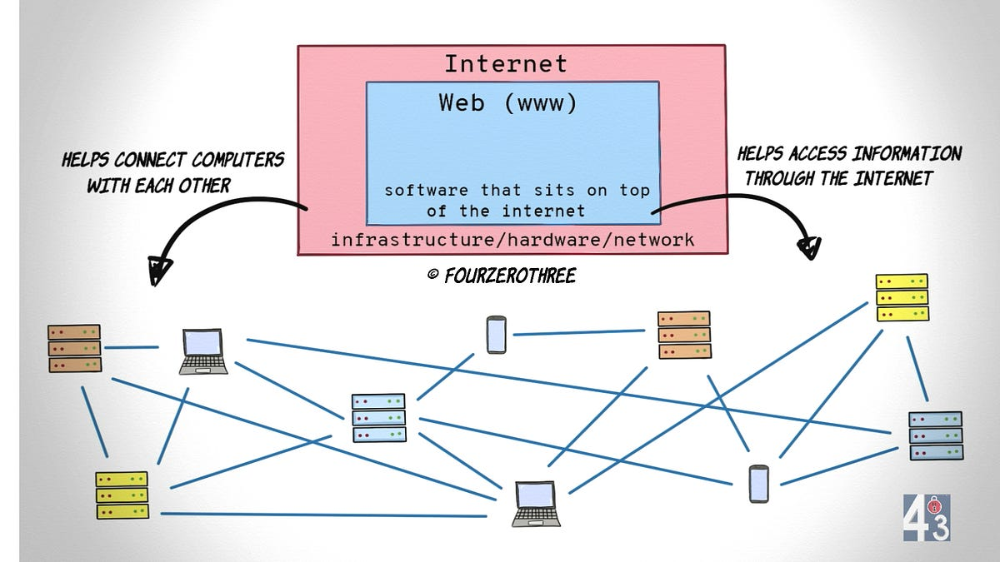

A system of interlinked hypertext documents and multimedia content accessed via the internet. It allows users to navigate between web pages using hyperlinks through a web browser. It was invented by Tim Berners-Lee in 1989 and is one of the most widely used services on the internet.
